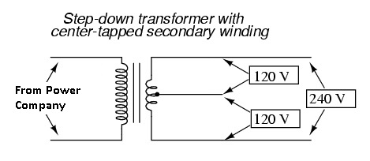

I have a question regarding Vrns reading of EmonPi
I'm using it in North America where voltage is supposed to be 110V
I measured with multimeter the voltage where AC-AC adapter is plugged in and it measured 121.
So I updated the config file to this.
calibration = 121V #(UK/EU: 230V, US: 110V)
When I check the Vrms reading of the node, I get 247.62 V
Is this normal / expected? If not, what could be wrong?
Thanks in advance.
Re: Vrms reading in US / Canada
Which ac adapter are you using to measure the voltage?
Re: Vrms reading in US / Canada
Hi Robert, it's the US AC-AC model that came with emonpi Kickstarter package (US option selected)
I assume it is this
http://shop.openenergymonitor.com/ac-ac-power-supply-adapter-ac-voltage-...
But can double check when I get home tonight.
Re: Vrms reading in US / Canada
I'm using it in North America where voltage is supposed to be 110V
Hi hrant,
The North American residential power supply is a 120/240 volt system. The terms 110 and 115 Volts, are obsolete.
http://vollrath.com/Vollrath/Parts-Support/FAQ-and-Reference/Reference/North-American-Voltage.htm
Regards,
Bill
Re: Vrms reading in US / Canada
So you're trying to catch up with us? But we're moving down from 240 V to 230 V to align with Europe!
"That's the beauty of standards, there are so many to choose from."
[The UK nominal centre voltage is likely to remain at 240 V for a long time. They fixed the problem by shifting the tolerances on the voltage. So instead of 240 V ± 6%, it's now 230 V ± 10%. Half of 230 is 115. Oh, the irony.]
Re: Vrms reading in US / Canada
Thanks Bill for the reference,
I referred to 110V because the Emonpi default settings had this
calibration = 230V #(UK/EU: 230V, US: 110V)
So we can propose to change it to
calibration = 230V #(UK/EU: 230V, US: 120V)
But that is not the main concern, the essence of my question is that
I have two phases of 120 V supply in my house, but the AC-AC adapter is connected to a single phase (which is by design and is ok)
The actual voltage is 121V, however the Vrms reading of the node is almost 250V
Where is this coming from? is that figure correct? if not what actions need to be taken to correct it?
Thanks
Re: Vrms reading in US / Canada
But that is not the main concern, the essence of my question is that
I have two phases of 120 V supply in my house, but the AC-AC adapter is connected to a single phase (which is by design and is ok)
The actual voltage is 121V, however the Vrms reading of the node is almost 250V
Where is this coming from? is that figure correct? if not what actions need to be taken to correct it?
What you have is this: (Your adapter is connected to single leg of your split-phase system)

Short answer: yes, the voltage you measured with your meter is correct.
This may help clarify things: http://openenergymonitor.org/emon/buildingblocks/EmonTx-in-North-America
Re: Vrms reading in US / Canada
I thought the original question was one of the calibration constant (but I had to check that the correct adapter was being used first). The 120 V and 230 V adapters both output roughly the same voltage, which gives roughly the same input to the ADC. It's the calibration constant that turns the numbers out of the ADC back into a meaningful voltage, so it's that which is wrong.
I understand that hrant has changed the source sketch, but I think he also needs to compile and upload it into the AVR inside his emonPi. Then he should see the correct (or nearly correct) value, close to 121 V, being reported.
Re: Vrms reading in US / Canada
Thanks Bill and Robert,
Yes My adapter is connected to a single leg of split-phase system, shouldn't then the reading be 120V?
Or is there logic in EmonPi that figures this out and extrapolates my readings as if my adapter was connected to two legs of a split-phase system?
Or is it the case that (As Robert pointed out) I need to compile and upload it into the AVR as I changed the default value from 230 to 121? (but that's a config not a sketch no?)
I am under the impression that any changes I make to the config file are effective after a restart.
See this thread
http://openenergymonitor.org/emon/node/10771
I did not take any additional steps to compile a sketch, and it's the same file that was edited to fix the issue of Inactive nodes.
Thanks for your responses
Re: Vrms reading in US / Canada
I thought the original question was one of the calibration constant
True, but he stated:
I'm using it in North America where voltage is supposed to be 110V
So I wanted to ensure he understood that 110V was just an outdated term. i.e the actual values are 120/240, and that the voltage he measured with his meter (I should have made that point clearer) is correct for a 120/240 system.
I edited my post above to that effect.
Re: Vrms reading in US / Canada
I was only repeating what I understood (I think it was from Glyn in another thread about calibrating the emonPi). The problem is, there is no mechanism for the AVR to read a disc file, so it cannot read the config data.
Re: Vrms reading in US / Canada
Presumably it could get passed in at boot time though, assuming that link is bi-directional. Or better yet, just let the AVR calculate OEM-Watts, OEM-Amps, and OEM-Volts and let the RPi turn them into real Watts, Amps and Volts as discussed recently in this thread: http://openenergymonitor.org/emon/node/10800
Re: Vrms reading in US / Canada
"Presumably it could get passed in at boot time though, assuming that link is bi-directional. "
I thought that was a possibility, but even if the link is there, it seems as if timing would be highly critical as, for the "continuous" sketches at least although these aren't the default, you presumably would not want the AVR to respond to anything and slow down once it was in the main loop.
Re: Vrms reading in US / Canada
Hrant - I not sure if this completely answers your question but it may help. I am in the US and the EmonHub line referred to should be:
calibration = 110V #(UK/EU: 230V, US: 110V)
It should not be "calibration = 121V #(UK/EU: 230V, US: 110V)". I also tried this with no success. As far as I can tell this is a "flag" of 230V or 110V and not a measured calibration voltage. For me the AC-AC Adapter Vrms is about 3 volts lower than a Fluke DVM measured voltage. I have not been able to locate an emonPi calibration area other than the one you referenced. I am guessing (hoping) it will be in a future version.
Also, make sure you update to V1.7 - it fixes an issue with the Vrms reading. https://github.com/openenergymonitor/emonpi/blob/master/Atmega328/emonPi...
Re: Vrms reading in US / Canada
Changing the calibration constants on-the-fly seems a bit over the top. I don't think I know of any meters that can do that. Currently you have to reflash the AVR f/w to change them, so requiring that you have to restart the AVR to change them seems an improvement, and avoids the need to be checking for anything in the main loop. After restarting, the AVR could refuse to do anything until it's been fed its calibration constants, and once received, it could continue with business as usual. I guess you'd need to check the relative performance of doing maths with a number in RAM Vs doing maths with a number hardcoded in the image.
Re: Vrms reading in US / Canada
It is my understanding that ehe UK vs US setting is set by the user in emonhub.conf with the "calibration = 110V #(UK/EU: 230V, US: 110V)" line. Only "110V" or "230V" are valid entries.
These are then translated into either "1p" or "2p" and sent to the emonpi board via the serial port much the same way the rfm is configured.
The emonpi sketch's us/uk option sets a "USA" boolean flag and that flag is used in the main loop to select a calibration constant. The calibration constant selected can be one of 2 preset values these values are hardcoded into the sketch and if adjusted the sketch will need recompiling and uploading.
However, beware the emonpi update routine will upload the default hex file and overwrite the edits.as discussed here
So going back to the OPQ "calibration = 121V #(UK/EU: 230V, US: 110V)" isn't valid and therefore it's defaulting to "UK mode" hence the ~247v. If you set it back to "110V" (US mode) and compare the reported values with your DMM readings. Then if required, the const float Vcal_USA= 130.0; line in the sketch can be adjusted using " new Vcal_USA = reported voltage / DMM reading x existing Vcal_USA " and then recompile&upload keeping in mind the points about emonpi updates.
Paul
Re: Vrms reading in US / Canada
In the light of this misunderstanding, would it not be better to change the config and the logic to use (say) "calibration = UK/EU" or "calibration = US".
[Yes, I know, "horse" and "stable door" springs to mind.]
Re: Vrms reading in US / Canada
I would go a step further and call the US v UK/EU thing a "mode" or a "setting" not a calibration, as that appears to be what has caused the confusion and why it appears in the settings.
Personally, I would of had "usamode = true" in emonhub.conf, (as an alternative to omitting it to use the "non-US default" ie UK/EU or defining "usamode = false" to be verbose). That boolean could be carried all the way through to the final code "if (USA) Vcal = Vcal_USA;" This also sidesteps the 240v vs 230 or 110v vs 115v vs 120v.
Paul
Re: Vrms reading in US / Canada
Thank you Paul, Jon, Robert et all for all the responses, you were right on.
The entry in the config file is just a selector and not a calibration value, and I agree with Paul proposal of naming it usamode = true / false
As soon as I changed the entry to 110V, my Vrms reading changed to 119.3V
Currently my Multimeter reading at the elctric panel is 119V, and where the AC-AC plug is connected it reads 120V
Unless I get advised by you otherwise I doubt that I need to change the Vcal_USA value from the default 130 in ~/emonpi/Atmega328/emonPi_RFM69CW_RF12Demo_DiscreteSampling/emonPi_RFM69CW_RF12Demo_DiscreteSampling.ino and recompile as my current Vrms value is right between my Multimeter readings.
Now that this is settled, and voltage reading is correct my Power1 readings are way off.
So I started reading up on this thread http://openenergymonitor.org/emon/node/10800 to see if my situation is the same.
To first give you some background, my EmonPi kit came with 2 CT sensors,unfortunately I cannot connect them to the Main source on my panel, as the diameter of the sensors are not large enough for US/Canada, I'm following up on this thread http://openenergymonitor.org/emon/node/10165 to settle for a proper solution for that issue.
In the meantime, I'm using the CT sensors to connect to individual breakers to measure the power and calibrate my system (One is connected to Pool Pump, and another to AC unit, I started with these because I know there is nothing else connected to those breakers, and they are the main factors of my electricity consumption during the warmer seasons)
My Pool Pump has a power reading on it, and at 1500 RPM, it is displaying 166 Wh
However My Power1 reading on EmonPi reads 75W previously before the Vrms fix around 150Wh
I do realize I'm measuring power on a 240V (242 VAC with multimeter to be accurate) device, but the calculations in EmonPi is based on 120V Vrms reading and CT1, which should measure about half the correct value, still doubling 75 would only get me around 150Wh which is still 10% off.
I have two questions.
1- Is adding a multiplier of 2 in EmonCMS feeds good enough to account for 120/240 measurement issue? I don't want to set back my Vrms to fake 240 to fix this? (I eventually would be measuring full electric consumption by connecting two CTs to the main entries) or should I make adjustments early on in the sketch? I doubt that it makes a difference, but I seek your advice.
2- Why the variance between Pump telling me 166Wh and Power1 telling me 150Wh? is it the same issue as http://openenergymonitor.org/emon/node/10800 ?
Should I be changing the multiplier in EmonCMS to 166/75= 2.213 to match the reading to Pump reading? Anyone has experience about the accuracy of the power measured on such devices?
Which one I should rely more on?
For Reference, this is the pump
http://www.amazon.com/gp/product/B00OLSWQS6?psc=1&redirect=true&ref_=oh_...
Many thanks in advance.
Re: Vrms reading in US / Canada
Hopefully, all the information you need about CTs, including alternative large aperture ones, is in Building Blocks - EmonTx-Use in North America.
Pool Pump: Is it running off 240 V? How are you measuring the power? 166 Wh is ENERGY!
It has a variable speed drive, so the power factor is anybody's guess. If you're saying P = V × I, you're probably off because of the power factor, and the emonPi is more likely to be correct (or exactly half if it's 240 V). If your number is 166 VA, then 150 / 166 = 0.9, and that's a respectable power factor for a variable speed drive.
The emonPi should measure power to an absurdly low power factor, but the way it does it means that it loses accuracy as the power factor gets worse. I don't think anyone has done proper tests to determine the errors, but I'd think that with a sensible current - a few amps, it should be reasonably accurate down to a pf of about 0.3 if it's been fully calibrated.
If the pump has a 240 V feed with no neutral, you'd simply double the power in emonCMS, assuming the voltage balance between the two legs is good (which normally appears to be the case). If it's got a neutral, you might find there is a neutral current that complicates matters, and to allow for that you could fudge the issue and make the multiplier a bit different to 2, which way depends on which leg has the higher current and which one you are measuring.
Re: Vrms reading in US / Canada
Robert,
The Pump has 240V with no neutral, just two legs of split phase.
The power reading is from the Pool Pump itself, so I have no idea how and what they are measuring, I'm assuming it is power as it is one of their selling points.
I have not measured the current (didn't feel like splitting the wires ...) just the voltage.
Thanks